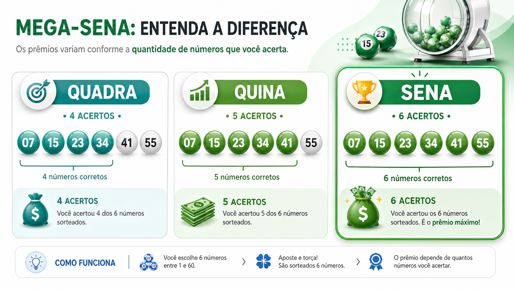

Quina, Quadra e Sena: quais são as diferenças na prática
Quem começa a acompanhar a Mega-Sena costuma ouvir com frequência os termos Quadra, Quina e Sena. Embora pareçam simples, muitas pessoas ainda têm dúvida sobre o que cada faixa significa na prática e como isso afeta a conferência de uma aposta.
Neste artigo, você vai entender a diferença entre essas três faixas de premiação, como cada uma funciona e por que conhecer essa divisão ajuda bastante na hora de interpretar resultados e verificar apostas.

O que significam Quadra, Quina e Sena
Essas três expressões representam os níveis de acerto possíveis na Mega-Sena que podem gerar premiação. A diferença entre elas está na quantidade de dezenas acertadas em relação ao resultado oficial do concurso.
A Quadra corresponde ao acerto de 4 números. A Quina corresponde ao acerto de 5 números. Já a Sena representa o acerto dos 6 números sorteados, que é a faixa principal da loteria.
Por que a Sena é a faixa mais conhecida
A Sena é a faixa que recebe maior destaque porque corresponde ao prêmio principal do concurso. É ela que costuma aparecer nas manchetes quando os valores estimados sobem ou quando há concursos acumulados.
Como exige o acerto total das seis dezenas, a Sena também é a faixa estatisticamente mais difícil de atingir. Isso ajuda a explicar por que seu valor costuma chamar tanta atenção.
Qual é a diferença prática entre as faixas
Na prática, a principal diferença está no número de acertos e no nível de premiação associado a cada resultado. Quanto maior a coincidência entre a aposta e as dezenas sorteadas, mais alta tende a ser a faixa alcançada.
Isso significa que um volante pode não atingir a Sena, mas ainda assim gerar prêmio se alcançar Quina ou Quadra. Por isso, conferir a aposta com atenção é essencial, especialmente para quem olha apenas para o prêmio principal e esquece as outras possibilidades.
O valor do prêmio é fixo em cada faixa?
Não. O valor recebido em cada faixa varia de acordo com o concurso, a arrecadação e a quantidade de apostadores premiados em cada nível. Por isso, Quadra, Quina e Sena não possuem um valor fixo universal.
Em alguns concursos, a diferença entre as faixas pode ser bastante ampla, principalmente quando a Sena acumula e o prêmio principal cresce de forma relevante.
Por que entender essas diferenças ajuda na conferência
Conhecer essas faixas evita interpretações erradas na hora de conferir um resultado. Algumas pessoas imaginam que só vale a pena verificar a aposta se houver acerto total, quando na verdade 4 ou 5 números também podem gerar premiação.
Esse entendimento também ajuda o usuário a ler notícias sobre concursos, prêmios e acumulados com mais contexto, sem focar apenas no prêmio principal.
Como o Consulta Mega pode ajudar
No Consulta Mega, o usuário pode consultar combinações, acessar resultados recentes e navegar por conteúdos explicativos para compreender melhor a lógica dos sorteios. Esse tipo de apoio informativo é útil para quem deseja conferir apostas com mais organização.
Ainda assim, a validação oficial de concursos, bilhetes e premiações deve sempre ser feita pelos canais oficiais da Caixa.
Conclusão
Quadra, Quina e Sena são faixas de premiação diferentes dentro da Mega-Sena, definidas pela quantidade de dezenas acertadas. Entender essa divisão é importante para conferir apostas corretamente e interpretar resultados de forma mais completa.
Quanto mais o usuário conhece essas diferenças na prática, mais clara se torna a leitura dos concursos e das possibilidades de premiação dentro da loteria.